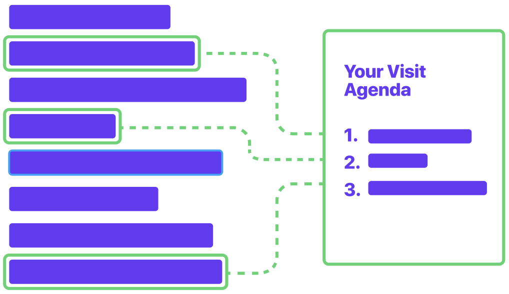

Imagining The Possibilities
Every doctor is going to describe their burnout and what it would take to make their situation better differently. We need to figure out how to implement a change that is to some degree like an amoeba - something that can be fluid and change forms for every person.
Family Medicine Physician, Pasadena
A collection of ideas ranging from small to large, naive to informed, impossible to imminently doable. A map of suggested constellations that attempt to touch on the bright spots of this research.
-
Low Hanging Fruit
-
AI Optimizes for Variability in Schedule
Algorithmic generation of Physician schedules to increase variability
-
KP School of Medicine Collaboration
Learning how to best practice medicine in a networked, digital age
-
Digital Scribe Technology
Automate a large percentage of clinical charting with 3rd party AI / Machine Learning
-
-
Intentional Leaps
-
Synced Visit Agendas
Lightweight, ongoing information sharing may lead to aligned member and provider expectations
-
Sustainability Database & Experiments
A bird’s eye view of all KP efforts to stem Physician Burnout
-
Annual Physical 2025
Reimagining the utility of the traditional “Physical” appointment to complement the lives and expectations of members in 2025
-
-
Systemic Changes
-
Physician-Centered EHR
An EHR designed with and for KP physicians to guarantee a user experience other orgs would line up to buy / mimic
-
Vision: Zero Visits
What if KP took such great continuous care of their member population that they see each patient less often?
-
Omniscient KP
Using personal, non-clinical data to better understand members’ lives to improve relationships and outcomes
-
Sustainability Database & Experiments
There's no shortage of ideas on how best to stem Physician Burnout, yet KP’s inability to track the success and learnings of heterogeneous pilots around the country is limiting their spread and producing redundant, costly efforts.
Let’s harness the scale and creativity of our organization to positively impact the wellbeing of clinicians at KP and around the world.
-
1. Build a Database to Catalog and Measure All KP Pilots Aiming To Reduce Burnout
Partner with ADS on a national website that organizes, tracks, and synthesizes meaningful data about all efforts around KP to reduce burnout. Enlist the help of Physician Leads in Wellness, Practice Efficiency, and pilot sponsors to ensure up-to-date data and pattern discovery.
-
2. Launch a Campaign to Incentivize "Sustainability Experiments"
Launch an inspiring marketing campaign to encourage clinicians around KP to submit their own “experiments” to reduce burnout in meaningful, measurable ways. Foster and nurture a community of passionate, catalytic thinkers across the regions.
-
3. Inspire & Influence the Global Medical Profession
Leaning on the patterns discovered across these pilots and experiments, publish in medical journals and speak at conferences about how a simple database married to a nationwide campaign to try something new may inform how other hospitals can benefit.
Synced Visit Agendas
Many patients maintain a running list of health concerns in anticipation of discussing them with their doctor. Many clinicians have suggested that having access to and prioritizing such concerns would translate into more effective and efficient visits.
Let’s utilize and improve upon existing KP tools to align visit expectations, prioritize visit agendas, and improve health outcomes.
-
1. Create channels for Members to Update a Running List of Health Concerns to Share in advance of an Appointment
Partner with ADS and DEC on a service to provide care teams with an ongoing list of member health concerns that can inform and prioritize visits. Consider all forms of existing input including KP’s mobile app, KP.org, Advice Nurse summaries, et al.
-
2. Expand these Channels to Optimize for a Collaborative Visit Agenda
Allow care teams to add to a member’s visit agenda and delegate some of the member generated items before the encounter.
-
3. Set a new Standard of Member / Care Team Communication and Coordination
KP has an opportunity to redefine what a proactive Member / Care Team relationship looks and feels like. In aggregate, this “ongoing” data can improve population health efforts as well as foster a new care team culture of shared responsibility and teamwork.
Digital Scribe Technology
One of the most common refrains our project team heard from Physicians was that having someone - or something - else assist with documentation of patient notes would allow them to focus their energy on the practice of medicine as opposed to the practice of charting and billing. Using other members of the care team, we also heard, was deemed cost prohibitive by senior PMG leadership.
Implemented responsibly, digital scribe technology could have profound impact on our clinical parter’s productivity and wellbeing.
-
DeepScribe
By listening in on the doctor-patient conversation, DeepScribe uses advanced deep learning to generate accurate, compliant, and secure SOAP notes right within your EHR.
-
EmpowerMD
EmpowerMD listens to clinical conversations between doctors and patients. It integrates this content with information from the patient’s EHR and automatically generates a medical summary.
-
Suki.AI
Suki is an AI-powered, voice-enabled digital assistant for doctors. Suki wants to give its users superpowers to make clinicians happier and more productive while solving some of the biggest problems in healthcare.